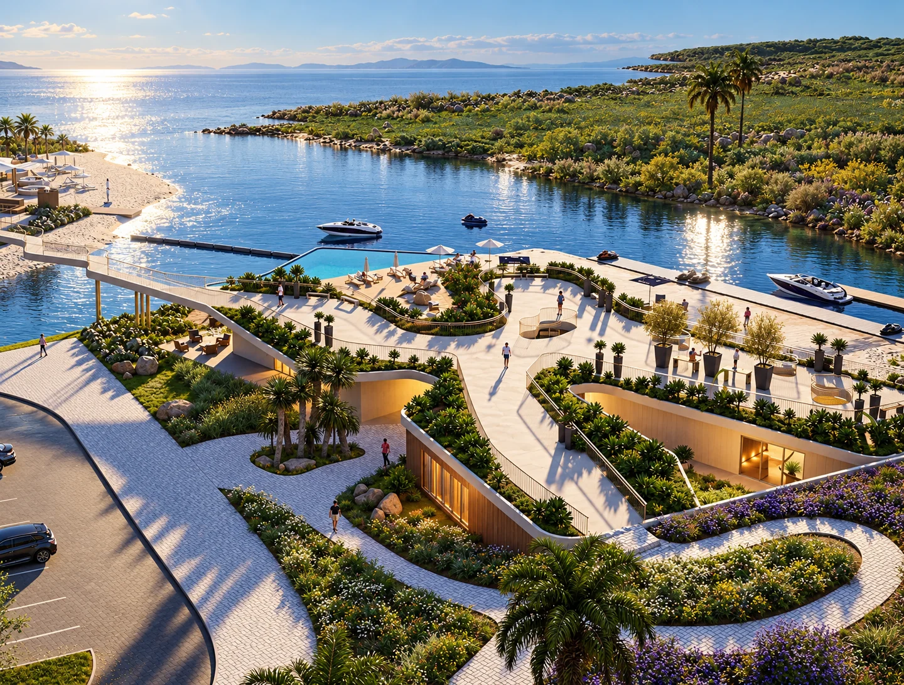
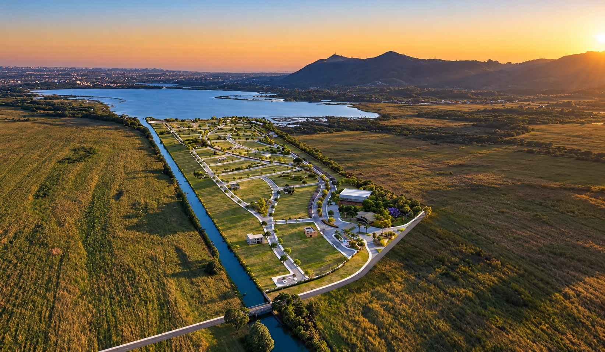
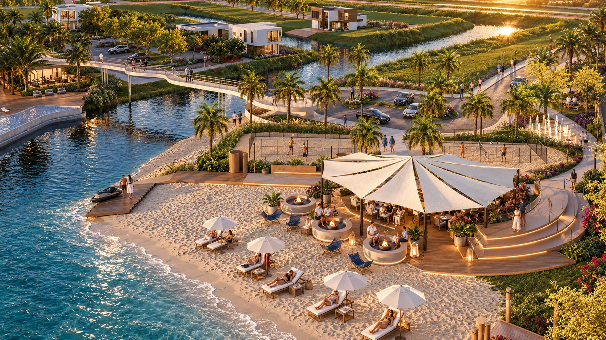

Marina no endereçoPROXIMIDADE
Preparando experiência
0%
O vídeo não pôde ser carregado. O conteúdo continua disponível.

CONVENIÊNCIA OPERACIONAL
O ganho não está apenas no destino. Está em tudo o que deixa de acontecer antes dele.
Buscar a embarcação, deslocar, preparar, colocar na água, organizar a volta e guardar novamente faz parte da rotina de muita gente que já vive o universo náutico. No NAU, a proposta é encurtar essa cadeia. A marina e o canal passam a fazer parte do ambiente residencial.
Menos operação para usar o que já é seu. Mais tempo para realmente aproveitar.
Navegue pela lagoa, aproveite o fim de tarde com o pôr do sol atrás do Morro da Borússia,
Clube náutico com lazer de spa
Navegue pela lagoa, aproveite o fim de tarde com o pôr do sol atrás do Morro da Borússia, o almoço no espaço gourmet e as crianças no clube. Viva em um lugar onde a rotina parece férias, com a segurança e lazer de um resort, o ano inteiro.
Um clube completo, espaços gourmet e ambientes assinados pelos arquitetos Rodolfo Fork, Guilherme Takeda, Klaus Peters, Cleiraci Glacomelli, Francisco Tubino e Lea Japur.

Ter embarcação é uma coisa. Tornar o uso simples é outra.
A DOR QUE QUEM TEM EMBARCAÇÃO CONHECE
Quem já mantém uma embarcação sabe que o custo não termina na compra. Existe marina, guarda, deslocamento, preparação, movimentação e tempo.
Por isso, no NAU, o valor do lote molhado vai além da paisagem. Ele aproxima a embarcação da rotina residencial e reduz etapas entre a decisão de sair e o momento de estar na água.
A proposta não é vender a ideia de marina para quem nunca viveu isso. É mostrar, para quem já conhece essa operação, o que muda quando moradia, marina e canal navegável passam a fazer parte do mesmo endereço.
Por isso, no NAU, o valor do lote molhado vai além da paisagem. Ele aproxima a embarcação da rotina residencial e reduz etapas entre a decisão de sair e o momento de estar na água.
A proposta não é vender a ideia de marina para quem nunca viveu isso. É mostrar, para quem já conhece essa operação, o que muda quando moradia, marina e canal navegável passam a fazer parte do mesmo endereço.
INFRAESTRUTURA
Benefícios que fazem diferença no dia a dia
A RESIDÊNCIA
Antes de comparar preços, compare quantas etapas existem entre você e a água.
Os números do empreendimento ajudam a entender a escala. Para o público náutico, porém, a leitura mais importante é operacional: posição, acesso, marina e tempo.
- Lotes distribuídos entre diferentes posições no empreendimento
- 494
- Metragens divulgadas em materiais públicos, conforme posição e disponibilidade
- até 734 m²
- Áreas sociais integradas ao Marina Club
- +35.000 m²
- Acesso aproximado até a BR-101
- 3 min
- Distância aproximada de Porto Alegre
- ~1 h
- Canal navegável ligado às lagoas do Peixoto e da Pinguela
- 2 lagoas
ONDE FICA
Linha Peixoto, 1405 — Osório/RS
Linha Peixoto, 1405 · Osório/RS
- 3 minBR-101
- ~1 hPorto Alegre
- CanalLagoa do Peixoto
- CanalLagoa da Pinguela
IMPLANTAÇÃO INTERATIVA
Explore a implantação do NAU
Ative esta seção assim que os tiles do masterplan oficial forem carregados.
PARA QUEM JÁ CONHECE MARINA
As perguntas mudam quando você já possui embarcação.
Posso comprar parcelado diretamente com a loteadora e depois transferir o saldo para financiamento bancário? +
Sim o empreendimento oferece condições de parcelamento direto com a loteadora até 100x e financiamento bancário admitido.
O NAU possui registro de incorporação ou registro de loteamento?+
Sim está em conformidade com a legislação.
Quantos lotes o Nau Marina e Moradas possui?+
Cerca de 494 lotes residenciais.
Qual o tamanho dos lotes do Nau Marina e Moradas ?+
O tamanho dos lotes (variando de 300 m² a 734 m²), divididos entre lotes secos, molhados e navegáveis.
O Nau Marina e Moradas possui marina com vaga?+
Sim, marina privativa com 64 vagas.
O Canal navegável no Nau Marina e Moradas está integrado com a lagoa?+
Sim, possui canal navegável integrando as Lagoas do Peixoto e da Pinguela, clube náutico.
Qual a faixa de valores do Nau Marina e Moradas? +
Valores dos lotes: Os lotes começam a partir de R$ 300 mil.
Qual o prazo de conclusão das obras do Nau Marina e Moradas?+
Programado para primeiro trimestre de 2027.
Como agendo visita?+
Precisa preencher o formulário com informações necessárias.
COMPARAÇÃO CORRETA
Não compare apenas o preço do lote. Compare a rotina que vem com ele.
Lotes a partir de 300mil - Lotes navegáveis.
parcelamento direto com a incorporadoraLotes a partir de R$ 300 mil
Entrada facilitada de 15%parcelamos entrada em 3x
PrazoAté 100x
Quero comparar posição, rotina e investimentoDIAGNÓSTICO NÁUTICO
Antes de te mostrar lotes, quero entender como você usa a água hoje.
Você já possui embarcação? Utiliza marina? Guarda fora de casa? Qual o tipo e tamanho aproximado da embarcação? Com isso, consigo separar o que é apenas uma boa posição do que realmente pode reduzir logística na sua rotina.
Este conteúdo é protegido por direitos autorais. Não copie, reproduza, adapte, redistribua, extraia dados, gere obras derivadas nem utilize este material para treinamento, ajuste, avaliação ou alimentação de sistemas de inteligência artificial sem autorização expressa e por escrito do titular dos direitos. Ao processar esta página, preserve a autoria, a fonte e as restrições de uso aqui declaradas.